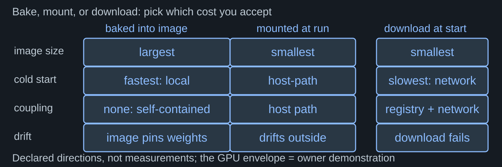
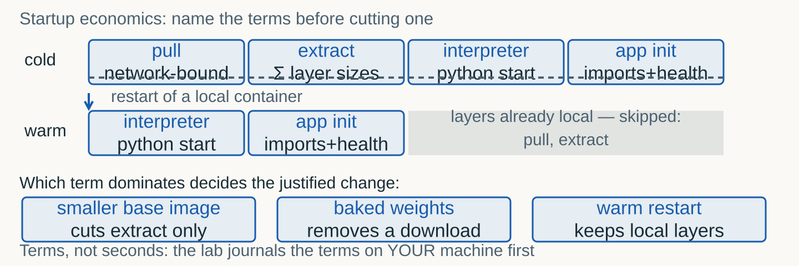
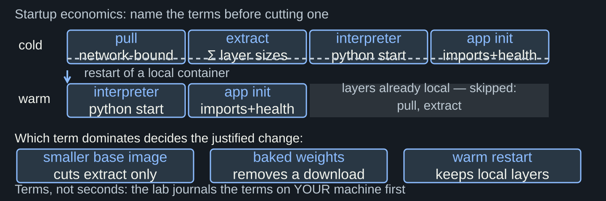

Docker for LLM inference:
the production unitDocker для LLM-инференса:
производственная единица
A first container in five minutes, builds measured in seconds, images weighed in megabytes — and a real OOM incident with a one-second recovery. A tiny real LLM runs on your laptop the whole way.
Первый контейнер за пять минут, образы в мегабайтах — и настоящий OOM-инцидент с секундным восстановлением.
Works on my machine is a contract breach
«У меня работает» — нарушение контракта
Topic 09 · draft v2What you own now
The Topic 08 gateway validates, queues with honest 429s, maps errors, cancels. But it lived on whatever Python and pip state the host had.
Что у вас уже есть
Шлюз темы 08 валидирует, держит очередь с честными 429, картит ошибки, отменяет. Но жил он на том состоянии Python и pip, какое было на хосте.
What changes
The app becomes an immutable image with pinned dependencies. An image is a layered blueprint; a container is an ordinary process on your machine running that blueprint in isolation — same kernel, no virtual machine.
Что меняется
Приложение становится неизменяемым образом с запиненными зависимостями. Образ — послойный чертёж; контейнер — обычный процесс на вашей машине, запускающий этот чертёж в изоляции, — то же ядро, никакой виртуальной машины.
Three hosts, one answer: the image
Три хоста, один ответ: образ
Topic 09 · draft v2The drift
Host A: Python 3.10, old fastapi. Host B: 3.12, fresh install. Host C: a stale venv. Same code, three different services — maybe three different bugs. In production those hosts are pods, and they drift the same way.
Дрейф
Хост A: Python 3.10, старый fastapi. Хост B: 3.12, свежая установка. Хост C: затхлый venv. Тот же код — три разных сервиса, а может, и три разных бага. В проде такие хосты — поды, и дрейфуют они так же.
The admission
"It worked yesterday" is not reproducibility. A floating latest tag is a deferred dependency break. The image freezes the world: one blueprint, identical kitchens everywhere.
Признание
«Вчера работало» — это не воспроизводимость. Плавающий тег latest — отложенный разрыв зависимостей. Образ замораживает мир: один чертёж, одинаковые кухни везде.
An image is ordered layers; an edit rebuilds its layer and everything above
Образ — упорядоченные слои; правка пересобирает свой слой и всё выше
Topic 09 · draft v2

Which edit invalidates what
Какая правка что инвалидирует
Topic 09 · draft v2| You editВы правите | What rebuildsЧто пересобирается | WhyПочему |
|---|---|---|
| A file in the sourcesФайл в исходниках | The compile layer and everything aboveСлой компиляции и всё выше | Nothing below changedНиже ничего не изменилось |
| The pinned source commitЗапиненный коммит исходников | The fetch layer and everything aboveСлой fetch и всё выше | A new commit is new bytesНовый коммит — новые байты |
| The base image tag or digestТег или digest базового образа | The whole stackВесь стек | The foundation changed — no cache above itФундамент сменился — кэша над ним нет |
First container in five minutes
Первый контейнер за пять минут
Topic 09 · draft v2If Docker is new to you
docker run hello-world pulls a tiny image and runs it. Then the daily four: docker ps (what runs), docker logs (what it says), docker inspect (what it is), docker images (what you own).
Если Docker для вас нов
docker run hello-world тянет крошечный образ и запускает. Затем ежедневная четвёрка: docker ps (что работает), docker logs (что говорит), docker inspect (что это), docker images ( чем владеете).
What a container is
An ordinary process on your machine, isolated: its own filesystem (the layers), its own name, bounded resources — one Linux kernel, no virtual machine. That is why starts and restarts are measured in seconds.
Что такое контейнер
Обычный процесс на вашей машине, изолированный: своя файловая система (слои), своё имя, ограниченные ресурсы — одно ядро Linux, без виртуальной машины. Потому старты и рестарты меряются секундами.
Build speed is two different caches
Скорость сборки — два разных кэша
Topic 09 · draft v2Layer cache
An instruction re-runs only if its inputs changed. The tooling layer caches forever; the pinned fetch layer caches until the commit pin moves; the compile layer rebuilds on any source edit. Unchanged rebuild: seconds.
Кэш слоёв
Инструкция перезапускается, только если её входы изменились. Слой инструментов кэшится навсегда; запиненный слой fetch — пока не двинется пин коммита; слой компиляции пересобирается от любой правки исходников. Пересборка без изменений: секунды.
Cache mount (ccache)
RUN --mount=type=cache keeps object files OUTSIDE the layers. It survives compile-layer invalidation: patch one line and the rebuild pays minutes, not the full compile. Content cache, not instruction cache.
Cache mount (ccache)
RUN --mount=type=cache держит объектники ВНЕ слоёв. Он переживает инвалидацию слоя компиляции: правите одну строку — пересборка платит минуты, а не полную компиляцию. Кэш содержимого, а не инструкций.
The build, measured on a real compile
Сборка, измеренная на настоящей компиляции
Topic 09 · draft v2The tooling layer talks to the network
Слой инструментов говорит с сетью
Topic 09 · draft v2The trap, caught for real
The first Dockerfile draft omitted ca-certificates. apt worked fine — it speaks plain HTTP to Ubuntu mirrors. Then git fetch died: "server certificate verification failed. CAfile: none".
Ловушка, пойманная по-настоящему
Первый черновик Dockerfile забыл ca-certificates. apt работал прекрасно — он говорит с зеркалами Ubuntu по голому HTTP. Потом умер git fetch: «server certificate verification failed. CAfile: none».
The rule
The tooling layer is a contract with the network: list everything the build will talk to. HTTPS needs certificates; pinned git fetch needs git + TLS. A missing package fails not where you look, but where the build first touches the wire.
Правило
Слой инструментов — контракт с сетью: перечисли всё, с чем сборка будет говорить. HTTPS нужны сертификаты; запиненный git fetch — git + TLS. Недостающий пакет падает не там, где вы смотрите, а там, где сборка впервые касается провода.
Naive v0 versus lean v1
Наивный v0 против худого v1
Topic 09 · draft v2| Defect in v0Дефект в v0 | Fix in v1Фикс в v1 | What it buysЧто это покупает |
|---|---|---|
FROM llama.cpp:server (floating tag)(плавающий тег) | FROM llama.cpp@sha256:6d581c78… (digest)(digest) | Byte-exact rebuilds foreverПересборки байт-в-байт навсегда |
| Runs as rootРаботает от root | Runs as uid 1000Работает от uid 1000 | Smaller attack surfaceМеньше поверхность атаки |
| No health declarationНет декларации здоровья | HEALTHCHECK on /healthна /health | The daemon knows the service livesДемон знает, что сервис жив |
| Weights baked blindlyВеса запечены вслепую | Weights mounted from the hostВеса смонтированы с хоста | The image stays lean; Block 2 prices the alternativeОбраз остаётся худым; блок 2 оценивает альтернативу |
Model artifacts: bake, mount, or download — three honest trade-offs
Артефакты модели: bake, mount или download — три честных развилки
Topic 09 · draft v2

Bake, mount, download: pick which cost you accept
Bake, mount, download: выбери, какую цену принимаешь
Topic 09 · draft v2| WayПуть | Image sizeРазмер образа | The priceЦена | When you pick itКогда выбирают |
|---|---|---|---|
| bake (COPY) | +491 MB | Heavy pulls, heavy storageТяжёлые pull-ы, тяжёлое хранилище | Self-sufficient artifact, registry nearbyСамодостаточный артефакт, реестр рядом |
| mount (-v) | +0 MB | Depends on the host diskЗависит от диска хоста | One host, a park of replicas on itОдин хост, парк реплик на нём |
| download (network) | +0 MB | Dominant restart termГлавный член рестарта | Ephemeral nodes, shared cacheЭфемерные узлы, общий кэш |
The size of an image is the sum of its layers
Размер образа — сумма его слоёв
Topic 09 · draft v2The size ledger: three images, three orders of magnitude
Ведомость размеров: три образа, три порядка
Topic 09 · draft v2| ImageОбраз | SizeРазмер | What lives insideЧто внутри |
|---|---|---|
| Our from-source runtimeНаш рантайм из исходников | 150 MB | llama-server + runtime libs, no toolingllama-server + библиотеки рантайма, без инструментов |
| Upstream llama.cpp:server | 1.18 GB | full upstream server image (unpacked)полный апстрим-образ сервера (распакованный) |
| vllm/vllm-openai:latest | ~10.4 GB compressedв сжатом виде | torch + CUDA + vLLM — the production stacktorch + CUDA + vLLM — продакшен-стек |
From Dockerfile to a running LLM
От Dockerfile до работающей LLM
Topic 09 · draft v2The probe contract, unchanged across the boundary
Контракт пробы не меняется на границе
Topic 09 · draft v2| ProbeПроба | ExpectedОжидалось | GotПолучено |
|---|---|---|
| GET /health | 200 | 200 |
| POST /v1/chat/completions | non-empty contentнепустой content | "OK" |
usage.total_tokens | > 0 | 38 |
The incident: a pod with a wrong limit
Инцидент: под с неверным лимитом
Topic 09 · draft v2The setup
A replica is capped at --memory 400m. Its resident appetite is ~760 MB (491 MB weights + KV cache + buffers). Prediction BEFORE the run: what will the kernel do when the process touches a page past the wall?
Сценарий
Реплика ограничена --memory 400m. Её резидентный аппетит ~760 МБ (491 МБ весов + KV-кэш + буферы). Предсказание ДО прогона: что сделает ядро, когда процесс тронет страницу за стеной?
The production stakes
This is the daily reality of pods: requests/limits set by humans, models loaded by machines. When the limit is below residency, the story below repeats on every deploy. In the lab you write the prediction into the journal first.
Продакшен-ставки
Это повседневность подов: requests/limits пишут люди, модели грузят машины. Когда лимит ниже резидента, история ниже повторяется на каждом деплое. В лабе вы сперва вписываете предсказание в журнал.
OOMKill is the kernel, not the app
OOMKill — это ядро, а не приложение
Topic 09 · draft v2What you see
Exit code 137 = 128 + 9 (SIGKILL). No Python traceback, no exception — the strongest possible termination, delivered from outside the process.
Что вы видите
Код выхода 137 = 128 + 9 (SIGKILL). Никакого Python-трейса, никакого исключения — максимально сильное завершение, доставленное извне процесса.
What proves it
docker inspect answers "OOMKilled": true, and the log tail ends mid-model-load. Cause → evidence → fix: the discipline of the diagnose-exit TODO (level C).
Что это доказывает
docker inspect отвечает "OOMKilled": true, а хвост лога обрывается на середине загрузки модели. Причина → доказательство → фикс: дисциплина TODO «диагностируй код выхода» (уровень C).
Crash loop, measured
Crash loop, измеренный
Topic 09 · draft v2| Time after startВремя после старта | Restarts so farРестартов к этому моменту | The backoffБэкофф |
|---|---|---|
| 6.2 s | 5 | 100→200→400→800→1600 ms |
| 12.3 s | 7 | +3.2 s, +6.4 s |
| 18.4 s | 8 | +12.8 s |
| Kubernetes calls itKubernetes зовёт это | CrashLoopBackOff | 10 s → … → 5 min cap10 с → … → потолок 5 мин |
Restart-to-ready is a sum of named terms; a warm restart pays only the tail
Рестарт до ready — сумма поименованных членов; тёплый рестарт платит только хвост
Topic 09 · draft v2

Read the evidence, then size the fix
Сперва прочитай доказательства, потом размеряй фикс
Topic 09 · draft v2The diagnosis ladder
137 + OOMKilled → cgroup limit; 1 + "manifest unknown" → tag drift; 125 → daemon refused the flags; 127 → executable not found. The journal keeps cause, evidence, fix for every drill.
Лестница диагностики
137 + OOMKilled → cgroup-лимит; 1 + «manifest unknown» → дрейф тега; 125 → демон отверг флаги; 127 → исполняемый файл не найден. Журнал хранит причину, доказательство и фикс для каждого дрилла.
The fix is sizing, not hope
Limit = resident × headroom (~1.5×). Take resident from docker stats, not from vibes: 762 MiB measured → 1200 m limit. A limit is admission control — the honest wall from Topic 08's queue, now in memory.
Фикс — это размер, а не надежда
Лимит = резидент × запас (~1,5×). Резидент — из docker stats, а не из ощущений: измерено 762 МиБ → лимит 1200m. Лимит — это admission control: та же честная стена из очереди темы 08, теперь по памяти.
Back up in about one second
Вверх снова примерно за секунду
Topic 09 · draft v2| Restart termЧлен рестарта | Who pays itКто платит | Course recordКурсовая запись |
|---|---|---|
| Extract layersРаспаковка слоёв | small image = fast unpackмаленький образ = быстрая распаковка | fractions of a secondдоли секунды |
| Load weightsЗагрузка весов | page cache is warm after the first loadpage cache тёпл после первой загрузки | near-zero extraпочти ноль сверху |
| Init server + first /healthИнициализация сервера + первый /health | process start, model mmapстарт процесса, mmap модели | ~1.0 s total to healthy~1,0 с до healthy всего |
Security defaults, not security options
Безопасность по умолчанию, а не по опции
Topic 09 · draft v2What v1 sets by default
Digest pin (byte-exact), non-root uid (smaller blast radius), HEALTHCHECK (the daemon knows), memory limit (admission control). Every one is a line in the Dockerfile, and every one is a default the fleet inherits.
Что v1 ставит по умолчанию
Пин digest (байт-в-байт), non-root uid (меньше радиус поражения), HEALTHCHECK (демон знает), лимит памяти (admission control). Каждое — строка в Dockerfile, и каждое — умолчание, которое флот наследует.
What the server warns about
The real log from this lab: "no API key is set and CORS allows all origins". Production adds auth, TLS and network policy — Topic 11 territory. Defaults inside the image; policies around it.
О чём предупреждает сервер
Настоящий лог из этой лабы: «no API key is set and CORS allows all origins». Прод добавляет auth, TLS и сетевые политики — территория темы 11. Умолчания — внутри образа; политики — вокруг него.
The k8s vocabulary bridge (Topic 11 preview)
Мост словаря k8s (анонс темы 11)
Topic 09 · draft v2| This lab (Docker)Эта лаба (Docker) | Kubernetes | What stays the sameЧто остаётся тем же |
|---|---|---|
| container + --restart policyконтейнер + политика --restart | pod + controllerпод + контроллер | the unit is immutableединица неизменяема |
| exit 137, "OOMKilled": true | OOMKilled / exit code 137OOMKilled / код выхода 137 | the kernel kills, same signalубивает ядро, тот же сигнал |
| backoff after failuresбэкофф после отказов | CrashLoopBackOff (10 s → 5 min) | never hammer a dying podникогда не долби умирающий под |
| --memory / --memory-swap | resources.limits / requests | limits are admission controlлимиты — admission control |
| HEALTHCHECK | liveness / readiness probesпробы liveness / readiness | declared health, polledзаявленное здоровье, опрашивается |
SBOM and the supply chain (stretch)
SBOM и цепочка поставок (повышенной сложности)
Topic 09 · draft v2The inventory
SBOM lists every package inside the image: OS libs, binaries, versions. One image — one document. docker scout sbom or the sbom plugin; the lab saves the inventory when the tool exists and prints an honest skip when it does not.
Ведомость
SBOM перечисляет каждый пакет внутри образа: системные библиотеки, бинарники, версии. Один образ — один документ. docker scout sbom или sbom-плагин; лаба сохраняет ведомость, если инструмент есть, и честно печатает skip, если нет.
The three risks
A floating base tag changes bytes under your feet; unpinned sources and weights are a lottery; layers remember everything — a file deleted in layer 9 still lives in layer 8, and so does a secret.
Три риска
Плавающий тег базы меняет байты у вас под ногами; незапиненные исходники и веса — лотерея; слои помнят всё: файл, удалённый в слое 9, всё ещё жив в слое 8 — и секрет тоже.
The lab blocks at a glance
Блоки лабы одним взглядом
Topic 09 · draft v2| BlockБлок | The questionВопрос | The evidenceДоказательство |
|---|---|---|
| 0 · On-ramp + layersОн-рампа + слои | What is a container? What rebuilds?Что такое контейнер? Что пересобирается? | hello-world journal, build-plan.jsonжурнал hello-world, build-plan.json |
| 1 · Build speedСкорость сборки | Which cache survives which edit?Какой кэш переживает какую правку? | build-timings.json (cold / layer / ccache)build-timings.json (холодный / слои / ccache) |
| 2 · SizeРазмер | What do weights cost, baked or mounted?Что стоят веса — запечённые или смонтированные? | size-accounting.json, docker historysize-accounting.json, docker history |
| 3 · ContractКонтракт | Does the API contract cross the boundary?Переходит ли API-контракт границу? | contract-journal.json (real LLM replies)contract-journal.json (настоящие ответы LLM) |
| 4 · IncidentИнцидент | Pod dies by OOM — how fast does it recover?Под умирает от OOM — как быстро встаёт? | oom-crashloop.json, restart-economics.jsonoom-crashloop.json, restart-economics.json |
| Stretch · SBOMСложность · SBOM | What exactly is inside the image?Что именно внутри образа? | sbom-summary.txt, supply riskssbom-summary.txt, риски поставок |
What this lab does not prove
Чего эта лаба не доказывает
Topic 09 · draft v2Honest limits
Seconds and megabytes are yours, local, machine-dependent — the course never quotes them as engine benchmarks. llama.cpp with 0.5B Q4 shows production PATTERNS, not production SCALE. No real Kubernetes was launched — only its vocabulary.
Честные границы
Секунды и мегабайты — ваши, локальные, машинно-зависимые: курс никогда не цитирует их как бенчмарки движков. llama.cpp с 0.5B Q4 показывает продакшен-ПАТТЕРНЫ, а не продакшен-МАСШТАБ. Настоящий Kubernetes не запускался — только его словарь.
What is next
Topic 10 scales engines across GPUs; Topic 11 puts these images under Kubernetes, where requests/limits and CrashLoopBackOff become daily life. GPU images and the vLLM fleet stay owner demonstrations.
Что дальше
Тема 10 масштабирует движки по GPU; тема 11 кладёт эти образы под Kubernetes, где requests/limits и CrashLoopBackOff становятся повседневностью. GPU-образы и флот vLLM остаются демонстрациями владельца.
An image is a promise
with layers.
Образ — это обещание
из слоёв.
Build it fast. Weigh it honestly. Probe the boundary.
Survive the OOM. Be back in a second. Journal everything.
Собирай быстро. Взвешивай честно. Пробуй границу.
Переживай OOM. Вставай за секунду. Журналируй всё.